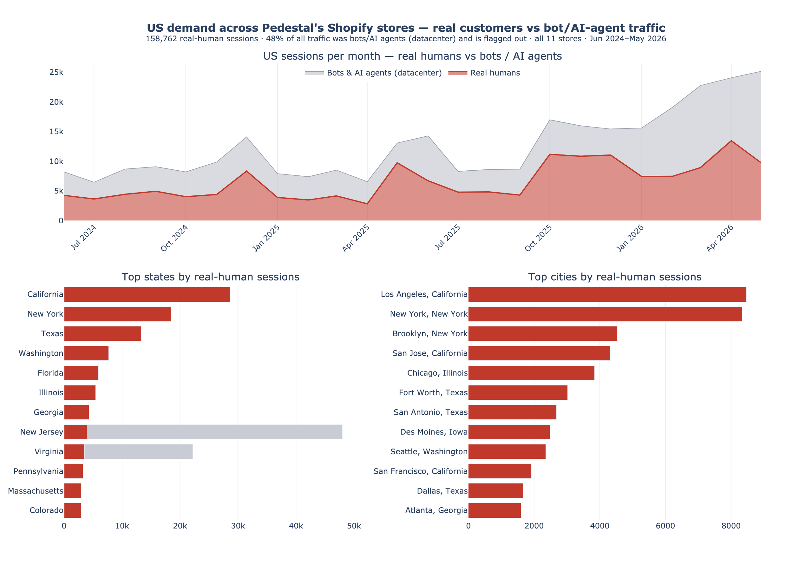

US Market Opportunity
Pedestal sells from European and international Shopify storefronts, with no US-localized store and no US-targeted ad spend. Even so, American shoppers keep finding us — and the trend is accelerating. This is a 24-month snapshot of that latent demand: how much, where, and how fast it's growing — with bot & AI-agent traffic filtered out so you're looking at real people.
Press ▶ Play (bottom-left of each map) or drag the month slider. Real customers only — datacenter/bot traffic removed.

Open interactive ▶